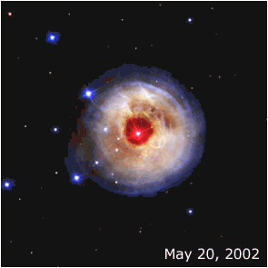

Lichtecho
Der Riesenstern V838 im Sternbild Einhorn hatte einen Ausbruch. In der Animation sieht man, wie das ausgesandte Licht den umgebenden Staub durchquert, ein sogenanntes Lichtecho. Der Stern ist ca. 20'000 Lichtjahre entfernt.
Die Einzelbilder stammen aus http://hubblesite.org/newscenter/archive/releases/2003/10/image/a/format/web_print (23. Nov. 2006) und wurden von mir animiert.

Zitat aus der Quelle:
ABOUT THIS IMAGE:
This sequence of pictures from the NASA Hubble Space Telescope's Advanced
Camera for Surveys dramatically demonstrates the reverberation of light
through space caused by an unusual stellar outburst in January 2002. A burst
of light from the bizarre star is spreading into space and reflecting off of
surrounding shells of dust to reveal a spectacular, multicolored bull's eye.
This sequence of pictures from May to December 2002 shows apparent changes
in the appearance of the circumstellar dust as different parts are
illuminated sequentially. This effect is called a "light echo." From the
first to last image the apparent diameter of the nebula appears to balloon
from 4 to 7 light-years. This gives the illusion that the dust is expanding
into space faster than the speed of light. In reality the dust shells are
not expanding at all, but it is simply the light from the stellar flash that
is sweeping out into the nebula. The different colors in the nebula reflect
changes in the color of the star during its outburst.
The red star at the center of the eyeball-like feature is an unusual
erupting supergiant called V838 Monocerotis, located about 20,000
light-years away in the winter constellation Monoceros (the Unicorn). During
its outburst the star brightened to more than 600,000 times our Sun's
luminosity.
The circular feature has now expanded to slightly larger than the angular
size of Jupiter on the sky. For several more years it will continue
expanding as reflected light arrives from more distant portions of the
nebula. Eventually, when light from the back side of the nebula begins to
arrive, the light echo will give the illusion of contracting, and finally it
will disappear by the end of this decade. The black gaps around the red star
are regions of space where there are holes in dust. This shows the nebula
has a Swiss-cheese structure.
Object Name: V838 Monocerotis
Image Type: Astronomical
Credit: NASA, ESA and H.E. Bond (STScI)
Ende Zitat aus http://hubblesite.org/newscenter/archive/releases/2003/10/image/a/
23. Nov. 2006
last update: 26. November 2006/Lie.